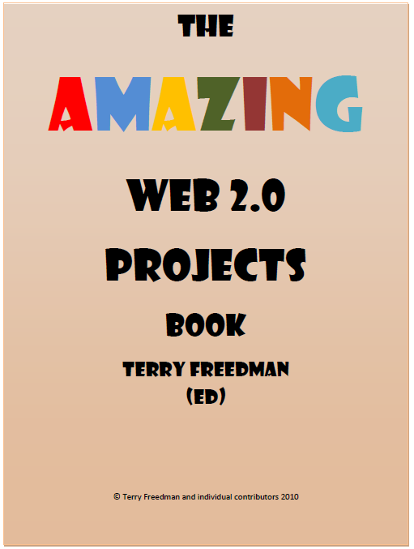

Be your role technical or leadership it is always important to be influenced and to share ideas. One man, and only one man has made this possible by gathering examples of projects run by schools and compiling them into an easy to read Book.I recommend those working in Primary Education read pages 14-48 closely and try hard not to be inspired by the work other schools are doing in this area.
Here is a link to the book and here is a link to the Author - Terry Freedman